Code
task_df <- read_rds(here("data", "final", "task.rds"))
participants <- read_rds(here("data", "final", "participants.rds"))Task 2 is … For modeling the signed error on the Y-axis, we ran the following models:
For modeling the signed error on the X-axis, we ran the following models:
Read in data
task_df <- read_rds(here("data", "final", "task.rds"))
participants <- read_rds(here("data", "final", "participants.rds"))Load data specific for task 2:
task2_df <- task_df %>% filter(task == "task2") %>%
select(-slider.x, -slider.y) %>%
mutate(data.ans.x = param.mu,
data.ans.y = dsgt(param.mu, param.mu, param.sigma, param.lambda, param.p, param.q, mean.cent = FALSE),
data.left.grad = numDeriv::grad(dsgt, param.mu - 1, mu = param.mu, sigma = param.sigma, lambda = param.lambda, p = param.p, q = param.q, mean.cent = FALSE),
data.right.grad = numDeriv::grad(dsgt, param.mu + 1, mu = param.mu, sigma = param.sigma, lambda = param.lambda, p = param.p, q = param.q, mean.cent = FALSE),
) %>%
right_join(participants, by = join_by(participantId)) %>%
# calculate things related to participants' selection
mutate(phy.select.x = pixel_to_phy_x(pixel.select.x, pixelToMM),
phy.select.y = pixel_to_phy_y(pixel.select.y, pixelToMM),
va.select.x = vis_angle(phy.select.x, dist_to_screen),
va.select.y = vis_angle(phy.select.y, dist_to_screen)) %>%
# calculate things related to answer
mutate(pixel.ans.x = data_to_pixel_x(data.ans.x),
pixel.ans.y = data_to_pixel_y(data.ans.y),
phy.ans.x = pixel_to_phy_x(pixel.ans.x, pixelToMM),
phy.ans.y = pixel_to_phy_y(pixel.ans.y, pixelToMM),
va.ans.x = vis_angle(phy.ans.x, dist_to_screen),
va.ans.y = vis_angle(phy.ans.y, dist_to_screen)) %>%
mutate(flat = (abs(data.left.grad) + abs(data.right.grad))/2)# Checking relations, focusing on the **Y** Axis
task2_df %>% mutate(error_va = va.select.x - va.ans.x) %>%
mutate(error_va = ifelse(error_va < tolerance, 0, error_va)) %>%
ggplot(aes(x = error_va)) +
geom_dots()
task2_df %>% ggplot(aes(y = phy.ans.y - phy.select.y, x = dist_to_screen)) +
geom_point()
task2_df %>% ggplot(aes(y = va.ans.y - va.select.y, x = dist_to_screen)) +
geom_point()
task2_df %>% ggplot(aes(x = va.ans.y - va.select.y)) + geom_dots()
task2_df %>% ggplot(aes(x = phy.ans.y - phy.select.y)) + geom_dots()
task2_df %>% ggplot(aes(x = (phy.ans.y - phy.select.y) / dist_to_screen)) + geom_dots()# Checking relations, focusing on the **X** Axis:
task2_df %>% ggplot(aes(x = data.ans.x - data.select.x)) +
geom_dots()
task2_df %>% ggplot(aes(x = va.select.x - va.ans.x)) +
geom_dots()
task2_df %>% ggplot(aes(x = (phy.ans.x - phy.select.x)/dist_to_screen)) +
geom_dots()
task2_df %>% ggplot(aes(x = va.select.x - va.ans.x)) +
geom_dots() +
facet_wrap(~participantId)
task2_df %>% ggplot(aes(y = va.select.x - va.ans.x, x = dist_to_screen)) +
geom_point(alpha = 0.5)
task2_df %>% ggplot(aes(y = va.select.x - va.ans.x, x = param.lambda)) +
geom_point(alpha = 0.5) +
labs(title = "Signed error on x-axes against skewness")Wikipedia. Note that alpha is shape and lambda is scale. This is the stan reference. Math model:
\[\begin{align*}\text{error}_i &\sim \text{Lomax}(\lambda_{\text{PID}[i]}, \alpha_{\text{PID}[i]}) \\ \log(\lambda_j) &\sim \text{Normal}(\mu_\lambda, \sigma_\lambda^2) \\ \log(\alpha_j) &\sim \text{Normal}(\mu_\alpha, \sigma_\alpha^2) \\ \mu_\lambda, \mu_\alpha &\sim \mathcal{N}(0, 1) \\ \sigma_\lambda, \sigma_\alpha &\sim \text{Half-Cauchy}(0, 1) \end{align*}\]
# Define the Lomax family
lomax_family <- custom_family(
"lomax",
dpars = c("mu", "lambda", "alpha"), # parameters: lambda = scale, alpha = shape
links = c("identity", "log", "log"), # log links ensure parameters are positive
lb = c(-Inf, 0, 0), # lower bounds for both parameters
type = "real"
)
# The Stan code for the Pareto log-likelihood function
# Note: Stan already has a built-in pareto_lpdf function
stan_funs <- "
// Use the built-in pareto_type_2_lpdf function
real lomax_lpdf(real y, real mu, real lambda, real alpha) {
return pareto_type_2_lpdf(y | 0, lambda, alpha);
}
real lomax_rng(real mu, real lambda, real alpha) {
return pareto_type_2_rng(0, lambda, alpha);
}
"Formula and posterior:
Formula and Posterior
f <- bf(error.y ~ 0,
mu ~ 0,
lambda ~ (1 | participantId),
alpha ~ (1 | participantId),
family = lomax_family)
p <- c(
prior(normal(0, 1), class = Intercept, dpar = alpha),
prior(cauchy(0, 1), class = sd, group = participantId, dpar = alpha, lb = 0),
prior(normal(0, 1), class = Intercept, dpar = lambda),
prior(cauchy(0, 1), class = sd, group = participantId, dpar = lambda, lb = 0)
)Fit the model:
model.y.lomax <- task2_df %>% mutate(error.y = abs(va.ans.y - va.select.y)) %>%
brm(
formula = f,
data = .,
family = lomax_family,
prior = p,
stanvars = stanvar(scode = stan_funs, block = "functions"),
chains = 4,
cores = 4,
file = here("fitted_models", "task2.y.lomax"),
file_refit = "on_change",
iter = 10000,
control = list(adapt_delta = 0.99, max_treedepth = 15),
save_pars = save_pars(all = TRUE)
)Check fit and posterior check:
summary(model.y.lomax)Warning: There were 3 divergent transitions after warmup. Increasing
adapt_delta above 0.99 may help. See
http://mc-stan.org/misc/warnings.html#divergent-transitions-after-warmup Family: lomax
Links: mu = identity; lambda = log; alpha = log
Formula: error.y ~ 0
mu ~ 0
lambda ~ (1 | participantId)
alpha ~ (1 | participantId)
Data: . (Number of observations: 160)
Draws: 4 chains, each with iter = 10000; warmup = 5000; thin = 1;
total post-warmup draws = 20000
Multilevel Hyperparameters:
~participantId (Number of levels: 16)
Estimate Est.Error l-95% CI u-95% CI Rhat Bulk_ESS
sd(lambda_Intercept) 12.14 2.94 7.54 18.93 1.00 1623
sd(alpha_Intercept) 2.01 0.64 1.11 3.59 1.00 4223
Tail_ESS
sd(lambda_Intercept) 2657
sd(alpha_Intercept) 7244
Regression Coefficients:
Estimate Est.Error l-95% CI u-95% CI Rhat Bulk_ESS Tail_ESS
lambda_Intercept -1.02 1.02 -3.00 0.96 1.00 11575 13331
alpha_Intercept 0.02 0.56 -0.97 1.23 1.00 8547 11746
Draws were sampled using sample(hmc). For each parameter, Bulk_ESS
and Tail_ESS are effective sample size measures, and Rhat is the potential
scale reduction factor on split chains (at convergence, Rhat = 1).# plot(model.y.lomax)Observe that the we still have three divergent transitions, even though we have taken the number of iterations to 100001. This suggests that the lomax model is likely not the right model.
1 for context other models took numb of iterations about 4000
Nevertheless, we still check the posterior to further confirm:
expose_functions(model.y.lomax, vectorize = TRUE)
# Define the posterior_predict function in R as per vignette
posterior_predict_lomax <- function(i, draws, ...) {
lambda <- draws$dpars$lambda[i]
alpha <- draws$dpars$alpha[i]
lomax_rng(0, lambda, alpha)
}
pp_check(model.y.lomax, ndraws = 100)
pp_check(model.y.lomax, ndraws = 100, type = "pit_ecdf")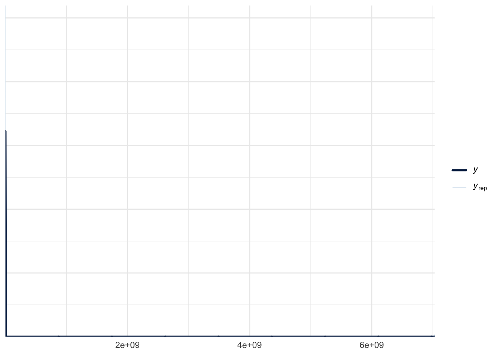

From the PIT-ECDF check it seems that indeed the lomax model is not a good one, because a well-calibrated model should show the line following the 45 degree line, not a flat line from above.
Math model:
\[\begin{align*}\text{error}_i &\sim \text{Exponential}(\lambda_{\text{PID}[i]}) \\ \log(\lambda_j) &\sim \text{Normal}(\mu_\lambda, \sigma_\lambda) \\ \mu_\lambda &\sim \mathcal{N}(0, 1), \sigma_\lambda \sim \text{Half-Cauchy}(0, 1) \end{align*}\]
Formula and prior:
f <- bf(error.y ~ 0,
mu ~ (1 | participantId), # technically this is lambda but we call it mu nonetheless
family = exponential)
# mu has log-link, so we don't pose any bounds on it
p <- c(
prior(normal(0, 1), class = Intercept),
prior(cauchy(0, 1), class = sd, group = participantId, lb = 0)
)Fit the model:
model.y.exponential <- task2_df %>% mutate(error.y = abs(va.ans.y - va.select.y)) %>%
brm(
formula = f,
data = .,
prior = p,
chains = 4,
cores = 4,
file = here("fitted_models", "task2.y.exponential"),
file_refit = "on_change",
control = list(adapt_delta = 0.99),
iter = 6000,
save_pars = save_pars(all = TRUE)
)Check fit and posterior:
summary(model.y.exponential) Family: exponential
Links: mu = log
Formula: error.y ~ 0
mu ~ (1 | participantId)
Data: . (Number of observations: 160)
Draws: 4 chains, each with iter = 6000; warmup = 3000; thin = 1;
total post-warmup draws = 12000
Multilevel Hyperparameters:
~participantId (Number of levels: 16)
Estimate Est.Error l-95% CI u-95% CI Rhat Bulk_ESS Tail_ESS
sd(Intercept) 1.33 0.33 0.85 2.15 1.00 1585 1999
Regression Coefficients:
Estimate Est.Error l-95% CI u-95% CI Rhat Bulk_ESS Tail_ESS
Intercept -4.36 0.38 -4.99 -3.48 1.00 1422 1417
Draws were sampled using sample(hmc). For each parameter, Bulk_ESS
and Tail_ESS are effective sample size measures, and Rhat is the potential
scale reduction factor on split chains (at convergence, Rhat = 1).plot(model.y.exponential)
pp_check(model.y.exponential, ndraws = 100)
pp_check(model.y.exponential, ndraws = 100, type = "pit_ecdf")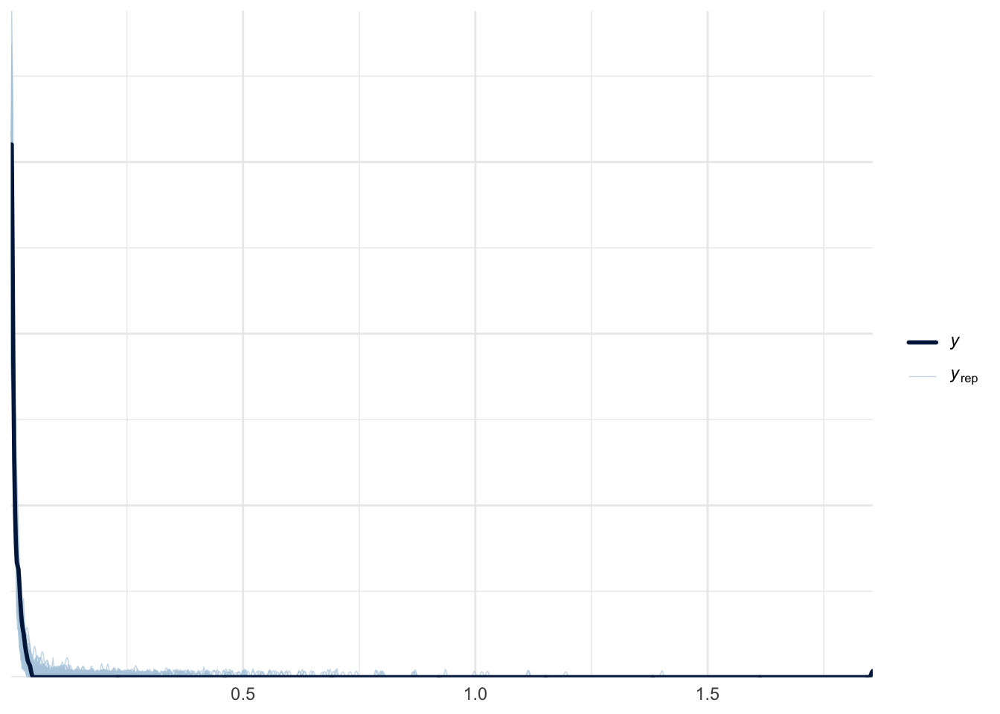
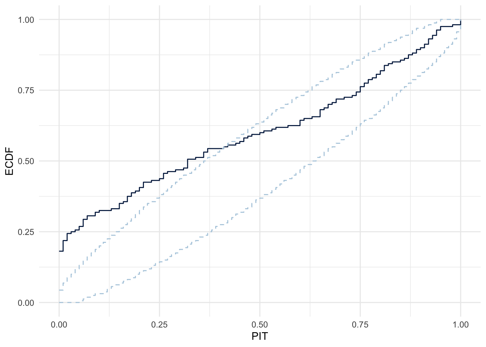
Overlay plot:
task2_df %>% modelr::data_grid(error.y = 0) %>%
add_predicted_draws(model.y.exponential, re_formula = NA) %>%
ggplot() +
stat_slab(aes(x = .prediction),
fill = "lightblue", alpha = 1) +
geom_dots(data = task2_df, aes(x = va.ans.y - va.select.y)) +
labs(y = "Probability", x = "Signed error", title = "Task 2") +
theme_minimal(base_size = 8) -> p
p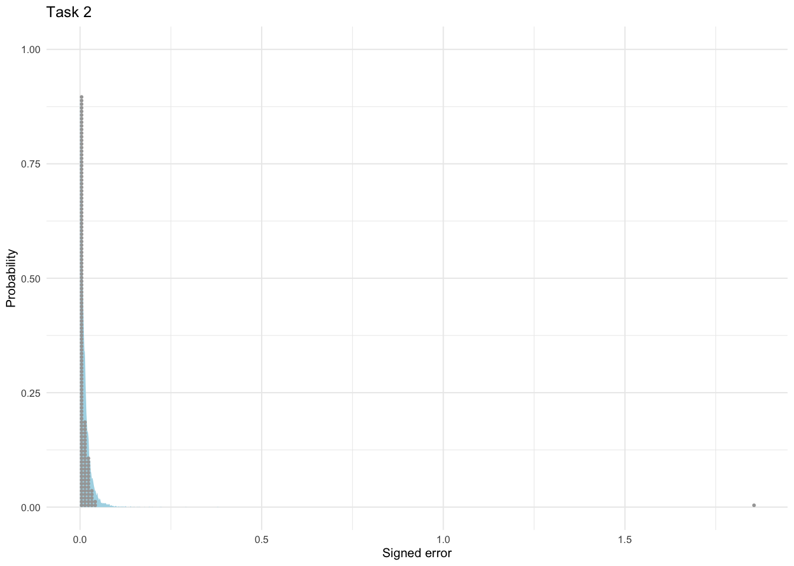
Specify formula and prior:
f <- bf(
error.y ~ 0,
mu ~ (1 | participantId), # log link
shape ~ (1 | participantId), # log link
family = weibull()
)
p <- c(
prior(normal(0, 1), class = Intercept),
prior(normal(0, 1), class = sd, group = participantId, lb = 0),
prior(normal(0, 1), class = Intercept, dpar = shape),
prior(normal(0, 1), class = sd, group = participantId, dpar = shape, lb = 0)
)Fit the model:
model.y.weibull <- task2_df %>% mutate(error.y = va.ans.y - va.select.y) %>%
mutate(error.y = ifelse(error.y < tolerance, tolerance, error.y)) %>% # Weibull needs value to be > 0
brm(formula = f,
data = .,
prior = p,
chains = 4,
cores = 4,
file = here("fitted_models", "task2.y.weibull"),
file_refit = "on_change",
save_pars = save_pars(all = TRUE),
control = list(adapt_delta = 0.99),
iter = 6000
)Check fit and posterior:
summary(model.y.weibull) Family: weibull
Links: mu = log; shape = log
Formula: error.y ~ 0
mu ~ (1 | participantId)
shape ~ (1 | participantId)
Data: . (Number of observations: 160)
Draws: 4 chains, each with iter = 6000; warmup = 3000; thin = 1;
total post-warmup draws = 12000
Multilevel Hyperparameters:
~participantId (Number of levels: 16)
Estimate Est.Error l-95% CI u-95% CI Rhat Bulk_ESS Tail_ESS
sd(Intercept) 0.32 0.26 0.01 0.95 1.00 3766 6004
sd(shape_Intercept) 0.45 0.11 0.26 0.71 1.00 4205 6197
Regression Coefficients:
Estimate Est.Error l-95% CI u-95% CI Rhat Bulk_ESS Tail_ESS
Intercept -4.26 0.25 -4.69 -3.72 1.00 9491 6115
shape_Intercept -0.83 0.14 -1.09 -0.55 1.00 4423 5101
Draws were sampled using sample(hmc). For each parameter, Bulk_ESS
and Tail_ESS are effective sample size measures, and Rhat is the potential
scale reduction factor on split chains (at convergence, Rhat = 1).plot(model.y.weibull)
pp_check(model.y.weibull, ndraws = 100)
pp_check(model.y.weibull, ndraws = 100, type = "pit_ecdf")
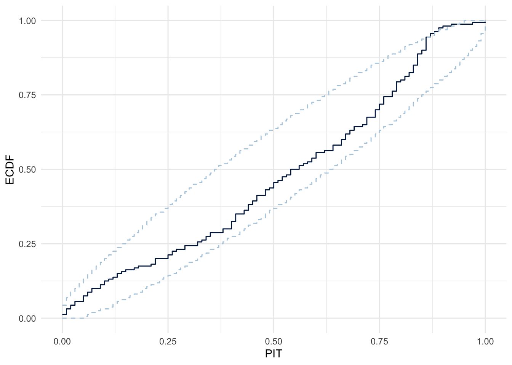
Overlay plot:
task2_df %>% modelr::data_grid(error.y = 0) %>%
add_predicted_draws(model.y.weibull, re_formula = NA) %>%
ggplot() +
stat_slab(aes(x = .prediction),
fill = "lightblue", alpha = 1) +
geom_dots(data = task2_df, aes(x = va.ans.y - va.select.y)) +
labs(y = "Probability", x = "Signed error") +
theme_minimal(base_size = 8) +
coord_cartesian(xlim = c(0, 0.5)) -> p
p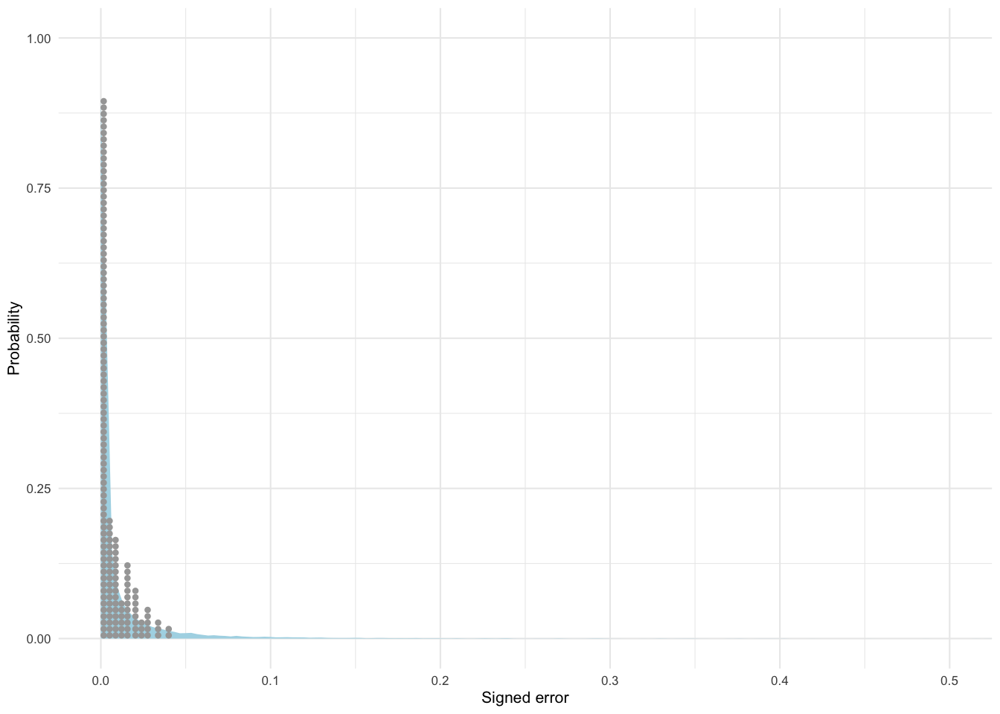
task2_df %>% modelr::data_grid(error.y = 0,
participantId = unique(participantId)) %>%
add_predicted_draws(model.y.weibull, ndraws = 100) %>%
# group_by(.draw) %>%
ggplot() +
stat_slab(aes(x = .prediction, group = .draw),
color = "lightblue", alpha = 0.5, fill = NA, n = 3000, size = 0.5) +
scale_thickness_shared() +
coord_cartesian(xlim = c(0, 0.1)) +
geom_rug(data = task2_df, aes(x = va.ans.y - va.select.y), linewidth = 0.5) +
stat_slab(data = task2_df, aes(x = va.ans.y - va.select.y),
color = "darkblue", fill = NA, n = 3000, size = 0.5) +
labs(y = "density", x = "signed error (on y)" ) +
scale_y_continuous(breaks = 0) -> p
p
Specify formula and prior:
f <- bf(error.y ~ 0,
mu ~ (1 | participantId),
sigma ~ (1 | participantId),
family = lognormal())
p <- c(
prior(normal(0, 1), class = Intercept),
prior(normal(0, 1), class = sd, group = participantId, lb = 0),
prior(normal(0, 1), class = Intercept, dpar = sigma),
prior(normal(0, 1), class = sd, group = participantId, dpar = sigma, lb = 0)
)model.y.lognormal <- task2_df %>%
mutate(error.y = va.ans.y - va.select.y) %>%
mutate(error.y = ifelse(error.y < tolerance, tolerance, error.y)) %>%
brm(formula = f,
data = .,
prior = p,
chains = 4,
cores = 4,
file = here("fitted_models", "task2.y.lognormal"),
file_refit = "on_change",
save_pars = save_pars(all = TRUE),
control = list(adapt_delta = 0.99),
iter = 6000
)Check fit and posterior:
summary(model.y.lognormal) Family: lognormal
Links: mu = identity; sigma = log
Formula: error.y ~ 0
mu ~ (1 | participantId)
sigma ~ (1 | participantId)
Data: . (Number of observations: 160)
Draws: 4 chains, each with iter = 6000; warmup = 3000; thin = 1;
total post-warmup draws = 12000
Multilevel Hyperparameters:
~participantId (Number of levels: 16)
Estimate Est.Error l-95% CI u-95% CI Rhat Bulk_ESS Tail_ESS
sd(Intercept) 1.13 0.56 0.15 2.38 1.00 2333 3196
sd(sigma_Intercept) 0.58 0.14 0.37 0.90 1.00 3810 5351
Regression Coefficients:
Estimate Est.Error l-95% CI u-95% CI Rhat Bulk_ESS Tail_ESS
Intercept -5.69 0.47 -6.47 -4.56 1.00 4168 3704
sigma_Intercept 1.24 0.16 0.91 1.55 1.00 2947 4599
Draws were sampled using sample(hmc). For each parameter, Bulk_ESS
and Tail_ESS are effective sample size measures, and Rhat is the potential
scale reduction factor on split chains (at convergence, Rhat = 1).plot(model.y.lognormal)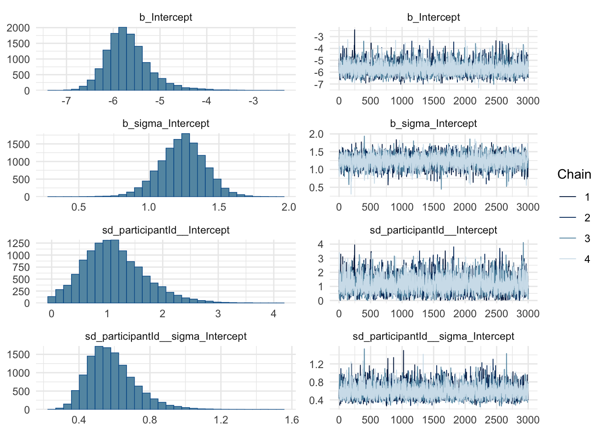
pp_check(model.y.lognormal, ndraws = 100)
pp_check(model.y.lognormal, ndraws = 100, type = "pit_ecdf")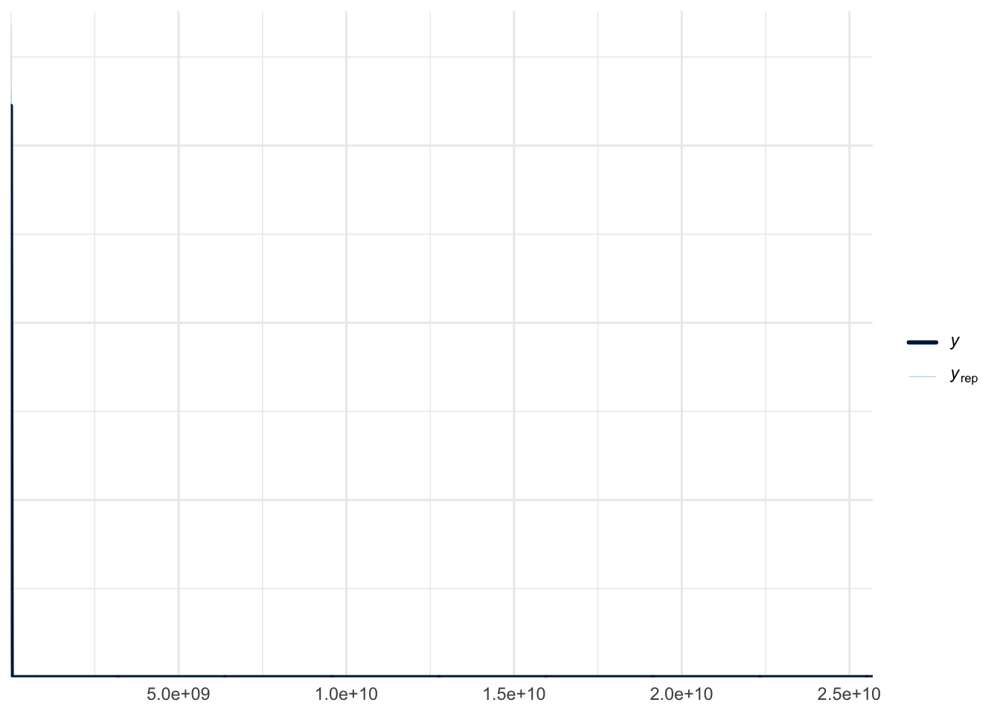
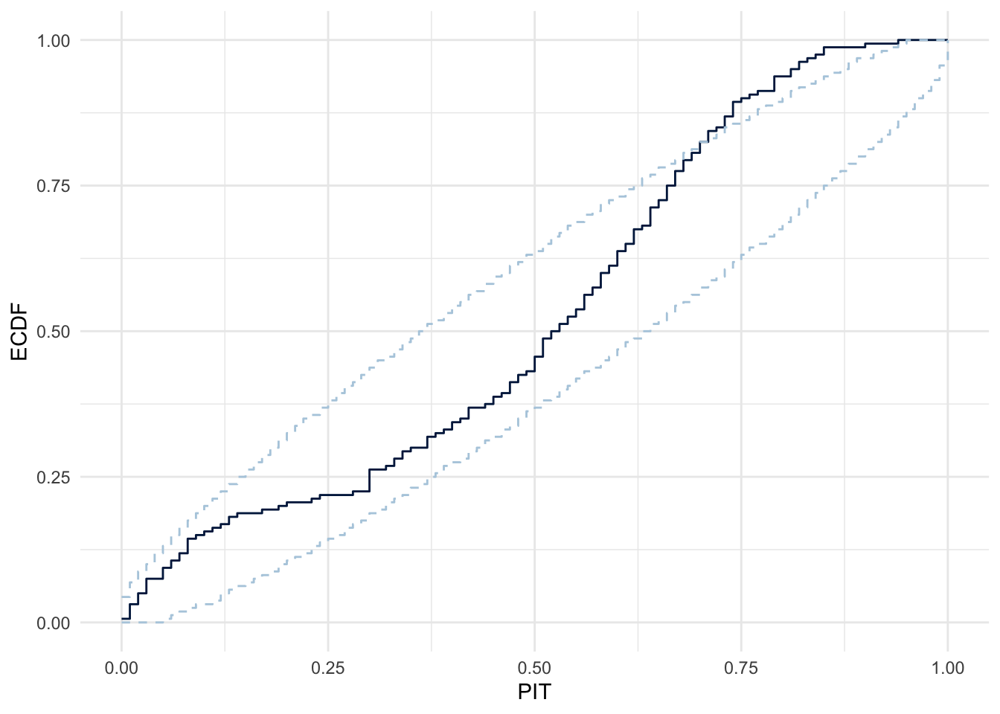
Specify formula and prior:
f <- bf(error.y ~ 0,
mu ~ (1 | participantId),
shape ~ (1 | participantId),
family = Gamma())
p <- c(
prior(normal(0, 1), class = Intercept),
prior(normal(0, 1), class = sd, group = participantId, lb = 0),
prior(normal(0, 1), class = Intercept, dpar = shape),
prior(normal(0, 1), class = sd, group = participantId, dpar = shape, lb = 0)
)model.y.gamma <- task2_df %>%
mutate(error.y = va.ans.y - va.select.y) %>%
mutate(error.y = ifelse(error.y < tolerance, tolerance, error.y)) %>%
brm(formula = f,
data = .,
prior = p,
chains = 4,
cores = 4,
file = here("fitted_models", "task2.y.gamma"),
file_refit = "on_change",
save_pars = save_pars(all = TRUE),
control = list(adapt_delta = 0.99),
iter = 8000
)The above model have a lot of divergent transitions, suggesting that this is not perhaps the best fit.
Check fit:
summary(model.y.gamma)Warning: There were 95 divergent transitions after warmup. Increasing
adapt_delta above 0.99 may help. See
http://mc-stan.org/misc/warnings.html#divergent-transitions-after-warmup Family: gamma
Links: mu = inverse; shape = log
Formula: error.y ~ 0
mu ~ (1 | participantId)
shape ~ (1 | participantId)
Data: . (Number of observations: 160)
Draws: 4 chains, each with iter = 8000; warmup = 4000; thin = 1;
total post-warmup draws = 16000
Multilevel Hyperparameters:
~participantId (Number of levels: 16)
Estimate Est.Error l-95% CI u-95% CI Rhat Bulk_ESS Tail_ESS
sd(Intercept) 1.32 1.01 0.05 3.75 1.00 5258 6975
sd(shape_Intercept) 0.17 0.12 0.01 0.44 1.00 5608 7534
Regression Coefficients:
Estimate Est.Error l-95% CI u-95% CI Rhat Bulk_ESS Tail_ESS
Intercept 4.79 0.78 3.24 6.30 1.00 13898 10453
shape_Intercept -1.80 0.11 -2.01 -1.59 1.00 14571 11543
Draws were sampled using sample(hmc). For each parameter, Bulk_ESS
and Tail_ESS are effective sample size measures, and Rhat is the potential
scale reduction factor on split chains (at convergence, Rhat = 1).Note that the above have a lot of divergent transitions, even though we took adapt_delta = 0.99, suggesting that this is not the right model. We can also check the PIC-ECDF plot to confirm:
pp_check(model.y.gamma, type = "pit_ecdf")
Note that we won’t use Lomax and Gamma in the model comparison, because the models have divergent transitions after fitting and demonstrate poor calibration.
Loo comparison:
loo(model.y.exponential, model.y.lognormal, model.y.weibull,
moment_match = TRUE, reloo=TRUE)Running /Library/Frameworks/R.framework/Resources/bin/R CMD SHLIB foo.c
using C compiler: ‘Apple clang version 17.0.0 (clang-1700.3.19.1)’
using SDK: ‘’
clang -arch arm64 -I"/Library/Frameworks/R.framework/Resources/include" -DNDEBUG -I"/Users/shenglong/Library/Caches/org.R-project.R/R/renv/cache/v5/macos/R-4.4/aarch64-apple-darwin20/Rcpp/1.1.0/0d3d8867aa41b0d9ad113b50c169ecb2/Rcpp/include/" -I"/Users/shenglong/Downloads/vis-decode-analysis/renv/library/macos/R-4.4/aarch64-apple-darwin20/RcppEigen/include/" -I"/Users/shenglong/Downloads/vis-decode-analysis/renv/library/macos/R-4.4/aarch64-apple-darwin20/RcppEigen/include/unsupported" -I"/Users/shenglong/Downloads/vis-decode-analysis/renv/library/macos/R-4.4/aarch64-apple-darwin20/BH/include" -I"/Users/shenglong/Library/Caches/org.R-project.R/R/renv/cache/v5/macos/R-4.4/aarch64-apple-darwin20/StanHeaders/2.32.10/c35dc5b81d7ffb1018aa090dff364ecb/StanHeaders/include/src/" -I"/Users/shenglong/Library/Caches/org.R-project.R/R/renv/cache/v5/macos/R-4.4/aarch64-apple-darwin20/StanHeaders/2.32.10/c35dc5b81d7ffb1018aa090dff364ecb/StanHeaders/include/" -I"/Users/shenglong/Library/Caches/org.R-project.R/R/renv/cache/v5/macos/R-4.4/aarch64-apple-darwin20/RcppParallel/5.1.11-1/07d228a359f31d8aebe6d2f643c1f012/RcppParallel/include/" -I"/Users/shenglong/Library/Caches/org.R-project.R/R/renv/cache/v5/macos/R-4.4/aarch64-apple-darwin20/rstan/2.32.7/5f47b80f0db40503697eef138a31a6ef/rstan/include" -DEIGEN_NO_DEBUG -DBOOST_DISABLE_ASSERTS -DBOOST_PENDING_INTEGER_LOG2_HPP -DSTAN_THREADS -DUSE_STANC3 -DSTRICT_R_HEADERS -DBOOST_PHOENIX_NO_VARIADIC_EXPRESSION -D_HAS_AUTO_PTR_ETC=0 -include '/Users/shenglong/Library/Caches/org.R-project.R/R/renv/cache/v5/macos/R-4.4/aarch64-apple-darwin20/StanHeaders/2.32.10/c35dc5b81d7ffb1018aa090dff364ecb/StanHeaders/include/stan/math/prim/fun/Eigen.hpp' -D_REENTRANT -DRCPP_PARALLEL_USE_TBB=1 -I/opt/R/arm64/include -fPIC -falign-functions=64 -Wall -g -O2 -c foo.c -o foo.o
In file included from <built-in>:1:
In file included from /Users/shenglong/Library/Caches/org.R-project.R/R/renv/cache/v5/macos/R-4.4/aarch64-apple-darwin20/StanHeaders/2.32.10/c35dc5b81d7ffb1018aa090dff364ecb/StanHeaders/include/stan/math/prim/fun/Eigen.hpp:22:
In file included from /Users/shenglong/Downloads/vis-decode-analysis/renv/library/macos/R-4.4/aarch64-apple-darwin20/RcppEigen/include/Eigen/Dense:1:
In file included from /Users/shenglong/Downloads/vis-decode-analysis/renv/library/macos/R-4.4/aarch64-apple-darwin20/RcppEigen/include/Eigen/Core:19:
/Users/shenglong/Downloads/vis-decode-analysis/renv/library/macos/R-4.4/aarch64-apple-darwin20/RcppEigen/include/Eigen/src/Core/util/Macros.h:679:10: fatal error: 'cmath' file not found
679 | #include <cmath>
| ^~~~~~~
1 error generated.
make: *** [foo.o] Error 1Running /Library/Frameworks/R.framework/Resources/bin/R CMD SHLIB foo.c
using C compiler: ‘Apple clang version 17.0.0 (clang-1700.3.19.1)’
using SDK: ‘’
clang -arch arm64 -I"/Library/Frameworks/R.framework/Resources/include" -DNDEBUG -I"/Users/shenglong/Library/Caches/org.R-project.R/R/renv/cache/v5/macos/R-4.4/aarch64-apple-darwin20/Rcpp/1.1.0/0d3d8867aa41b0d9ad113b50c169ecb2/Rcpp/include/" -I"/Users/shenglong/Downloads/vis-decode-analysis/renv/library/macos/R-4.4/aarch64-apple-darwin20/RcppEigen/include/" -I"/Users/shenglong/Downloads/vis-decode-analysis/renv/library/macos/R-4.4/aarch64-apple-darwin20/RcppEigen/include/unsupported" -I"/Users/shenglong/Downloads/vis-decode-analysis/renv/library/macos/R-4.4/aarch64-apple-darwin20/BH/include" -I"/Users/shenglong/Library/Caches/org.R-project.R/R/renv/cache/v5/macos/R-4.4/aarch64-apple-darwin20/StanHeaders/2.32.10/c35dc5b81d7ffb1018aa090dff364ecb/StanHeaders/include/src/" -I"/Users/shenglong/Library/Caches/org.R-project.R/R/renv/cache/v5/macos/R-4.4/aarch64-apple-darwin20/StanHeaders/2.32.10/c35dc5b81d7ffb1018aa090dff364ecb/StanHeaders/include/" -I"/Users/shenglong/Library/Caches/org.R-project.R/R/renv/cache/v5/macos/R-4.4/aarch64-apple-darwin20/RcppParallel/5.1.11-1/07d228a359f31d8aebe6d2f643c1f012/RcppParallel/include/" -I"/Users/shenglong/Library/Caches/org.R-project.R/R/renv/cache/v5/macos/R-4.4/aarch64-apple-darwin20/rstan/2.32.7/5f47b80f0db40503697eef138a31a6ef/rstan/include" -DEIGEN_NO_DEBUG -DBOOST_DISABLE_ASSERTS -DBOOST_PENDING_INTEGER_LOG2_HPP -DSTAN_THREADS -DUSE_STANC3 -DSTRICT_R_HEADERS -DBOOST_PHOENIX_NO_VARIADIC_EXPRESSION -D_HAS_AUTO_PTR_ETC=0 -include '/Users/shenglong/Library/Caches/org.R-project.R/R/renv/cache/v5/macos/R-4.4/aarch64-apple-darwin20/StanHeaders/2.32.10/c35dc5b81d7ffb1018aa090dff364ecb/StanHeaders/include/stan/math/prim/fun/Eigen.hpp' -D_REENTRANT -DRCPP_PARALLEL_USE_TBB=1 -I/opt/R/arm64/include -fPIC -falign-functions=64 -Wall -g -O2 -c foo.c -o foo.o
In file included from <built-in>:1:
In file included from /Users/shenglong/Library/Caches/org.R-project.R/R/renv/cache/v5/macos/R-4.4/aarch64-apple-darwin20/StanHeaders/2.32.10/c35dc5b81d7ffb1018aa090dff364ecb/StanHeaders/include/stan/math/prim/fun/Eigen.hpp:22:
In file included from /Users/shenglong/Downloads/vis-decode-analysis/renv/library/macos/R-4.4/aarch64-apple-darwin20/RcppEigen/include/Eigen/Dense:1:
In file included from /Users/shenglong/Downloads/vis-decode-analysis/renv/library/macos/R-4.4/aarch64-apple-darwin20/RcppEigen/include/Eigen/Core:19:
/Users/shenglong/Downloads/vis-decode-analysis/renv/library/macos/R-4.4/aarch64-apple-darwin20/RcppEigen/include/Eigen/src/Core/util/Macros.h:679:10: fatal error: 'cmath' file not found
679 | #include <cmath>
| ^~~~~~~
1 error generated.
make: *** [foo.o] Error 1Running MCMC with 4 chains, at most 10 in parallel...
Chain 3 finished in 2.8 seconds.
Chain 1 finished in 3.1 seconds.
Chain 4 finished in 3.2 seconds.
Chain 2 finished in 3.5 seconds.
All 4 chains finished successfully.
Mean chain execution time: 3.2 seconds.
Total execution time: 3.6 seconds.Running /Library/Frameworks/R.framework/Resources/bin/R CMD SHLIB foo.c
using C compiler: ‘Apple clang version 17.0.0 (clang-1700.3.19.1)’
using SDK: ‘’
clang -arch arm64 -I"/Library/Frameworks/R.framework/Resources/include" -DNDEBUG -I"/Users/shenglong/Library/Caches/org.R-project.R/R/renv/cache/v5/macos/R-4.4/aarch64-apple-darwin20/Rcpp/1.1.0/0d3d8867aa41b0d9ad113b50c169ecb2/Rcpp/include/" -I"/Users/shenglong/Downloads/vis-decode-analysis/renv/library/macos/R-4.4/aarch64-apple-darwin20/RcppEigen/include/" -I"/Users/shenglong/Downloads/vis-decode-analysis/renv/library/macos/R-4.4/aarch64-apple-darwin20/RcppEigen/include/unsupported" -I"/Users/shenglong/Downloads/vis-decode-analysis/renv/library/macos/R-4.4/aarch64-apple-darwin20/BH/include" -I"/Users/shenglong/Library/Caches/org.R-project.R/R/renv/cache/v5/macos/R-4.4/aarch64-apple-darwin20/StanHeaders/2.32.10/c35dc5b81d7ffb1018aa090dff364ecb/StanHeaders/include/src/" -I"/Users/shenglong/Library/Caches/org.R-project.R/R/renv/cache/v5/macos/R-4.4/aarch64-apple-darwin20/StanHeaders/2.32.10/c35dc5b81d7ffb1018aa090dff364ecb/StanHeaders/include/" -I"/Users/shenglong/Library/Caches/org.R-project.R/R/renv/cache/v5/macos/R-4.4/aarch64-apple-darwin20/RcppParallel/5.1.11-1/07d228a359f31d8aebe6d2f643c1f012/RcppParallel/include/" -I"/Users/shenglong/Library/Caches/org.R-project.R/R/renv/cache/v5/macos/R-4.4/aarch64-apple-darwin20/rstan/2.32.7/5f47b80f0db40503697eef138a31a6ef/rstan/include" -DEIGEN_NO_DEBUG -DBOOST_DISABLE_ASSERTS -DBOOST_PENDING_INTEGER_LOG2_HPP -DSTAN_THREADS -DUSE_STANC3 -DSTRICT_R_HEADERS -DBOOST_PHOENIX_NO_VARIADIC_EXPRESSION -D_HAS_AUTO_PTR_ETC=0 -include '/Users/shenglong/Library/Caches/org.R-project.R/R/renv/cache/v5/macos/R-4.4/aarch64-apple-darwin20/StanHeaders/2.32.10/c35dc5b81d7ffb1018aa090dff364ecb/StanHeaders/include/stan/math/prim/fun/Eigen.hpp' -D_REENTRANT -DRCPP_PARALLEL_USE_TBB=1 -I/opt/R/arm64/include -fPIC -falign-functions=64 -Wall -g -O2 -c foo.c -o foo.o
In file included from <built-in>:1:
In file included from /Users/shenglong/Library/Caches/org.R-project.R/R/renv/cache/v5/macos/R-4.4/aarch64-apple-darwin20/StanHeaders/2.32.10/c35dc5b81d7ffb1018aa090dff364ecb/StanHeaders/include/stan/math/prim/fun/Eigen.hpp:22:
In file included from /Users/shenglong/Downloads/vis-decode-analysis/renv/library/macos/R-4.4/aarch64-apple-darwin20/RcppEigen/include/Eigen/Dense:1:
In file included from /Users/shenglong/Downloads/vis-decode-analysis/renv/library/macos/R-4.4/aarch64-apple-darwin20/RcppEigen/include/Eigen/Core:19:
/Users/shenglong/Downloads/vis-decode-analysis/renv/library/macos/R-4.4/aarch64-apple-darwin20/RcppEigen/include/Eigen/src/Core/util/Macros.h:679:10: fatal error: 'cmath' file not found
679 | #include <cmath>
| ^~~~~~~
1 error generated.
make: *** [foo.o] Error 1Output of model 'model.y.exponential':
Computed from 12000 by 160 log-likelihood matrix.
Estimate SE
elpd_loo 574.4 50.5
p_loo 59.6 35.6
looic -1148.9 100.9
------
MCSE of elpd_loo is 0.2.
MCSE and ESS estimates assume MCMC draws (r_eff in [0.5, 1.6]).
All Pareto k estimates are good (k < 0.7).
See help('pareto-k-diagnostic') for details.
Output of model 'model.y.lognormal':
Computed from 12000 by 160 log-likelihood matrix.
Estimate SE
elpd_loo 702.6 40.8
p_loo 47.2 14.6
looic -1405.1 81.6
------
MCSE of elpd_loo is NaN.
MCSE and ESS estimates assume MCMC draws (r_eff in [0.5, 1.5]).
All Pareto k estimates are good (k < 0.7).
See help('pareto-k-diagnostic') for details.
Output of model 'model.y.weibull':
Computed from 12000 by 160 log-likelihood matrix.
Estimate SE
elpd_loo 755.5 43.3
p_loo 25.5 5.6
looic -1511.0 86.6
------
MCSE of elpd_loo is NaN.
MCSE and ESS estimates assume MCMC draws (r_eff in [0.6, 1.7]).
All Pareto k estimates are good (k < 0.7).
See help('pareto-k-diagnostic') for details.
Model comparisons:
elpd_diff se_diff
model.y.weibull 0.0 0.0
model.y.lognormal -52.9 9.5
model.y.exponential -181.0 48.9 Weibull is the best model.
Math model:
\[\begin{align} \text{error_va}_{i} &\sim \text{Normal}(\mu, \sigma^2) \\ \mu &\sim \mathcal{N}(0, 1) \\ \sigma &\sim \text{Half-Cauchy}(0, 1) \end{align}\]
Formula and prior:
f <- bf(error.x ~ 0,
mu ~ (1 | participantId),
sigma ~ (1 | participantId),
family = gaussian)
# sigma has log-link, so we don't pose any bounds on it
p <- c(
prior(normal(0, 1), class = Intercept),
prior(normal(0, 1), class = sd, group = participantId, lb = 0),
prior(normal(0, 1), class = Intercept, dpar = sigma),
prior(normal(0, 1), class = sd, group = participantId, dpar = sigma, lb = 0)
)Fit the model:
model.x.normal <- task2_df %>% mutate(error.x = va.select.x - va.ans.x) %>%
brm(
formula = f,
data = .,
prior = p,
chains = 4,
cores = 4,
file = here("fitted_models", "task2.x.normal"),
file_refit = "on_change",
control = list(adapt_delta = 0.99),
iter = 6000,
save_pars = save_pars(all = TRUE)
)Check fit and posterior:
summary(model.x.normal) Family: gaussian
Links: mu = identity; sigma = log
Formula: error.x ~ 0
mu ~ (1 | participantId)
sigma ~ (1 | participantId)
Data: . (Number of observations: 160)
Draws: 4 chains, each with iter = 6000; warmup = 3000; thin = 1;
total post-warmup draws = 12000
Multilevel Hyperparameters:
~participantId (Number of levels: 16)
Estimate Est.Error l-95% CI u-95% CI Rhat Bulk_ESS Tail_ESS
sd(Intercept) 0.04 0.03 0.00 0.11 1.00 4082 5219
sd(sigma_Intercept) 0.34 0.11 0.16 0.57 1.00 3920 5807
Regression Coefficients:
Estimate Est.Error l-95% CI u-95% CI Rhat Bulk_ESS Tail_ESS
Intercept 0.01 0.02 -0.03 0.06 1.00 9606 8041
sigma_Intercept -1.38 0.11 -1.59 -1.17 1.00 5019 6357
Draws were sampled using sample(hmc). For each parameter, Bulk_ESS
and Tail_ESS are effective sample size measures, and Rhat is the potential
scale reduction factor on split chains (at convergence, Rhat = 1).plot(model.x.normal)
pp_check(model.x.normal, ndraws= 100) -> task2.x.gaussian
pp_check(model.x.normal, ndraws= 100, type = "pit_ecdf") -> task2.x.gaussian.pit
task2.x.gaussian
task2.x.gaussian.pit

Get the posterior for fitting another task (i.e., task 1):
# model.x.normal %>% get_variables(.)
model.x.normal %>% spread_draws(b_Intercept, b_sigma_Intercept) %>%
mutate(b_sigma = exp(b_sigma_Intercept)) %>%
pivot_longer(cols = c(b_Intercept, b_sigma)) %>%
ggplot(aes(x = value, y = name)) +
stat_halfeye()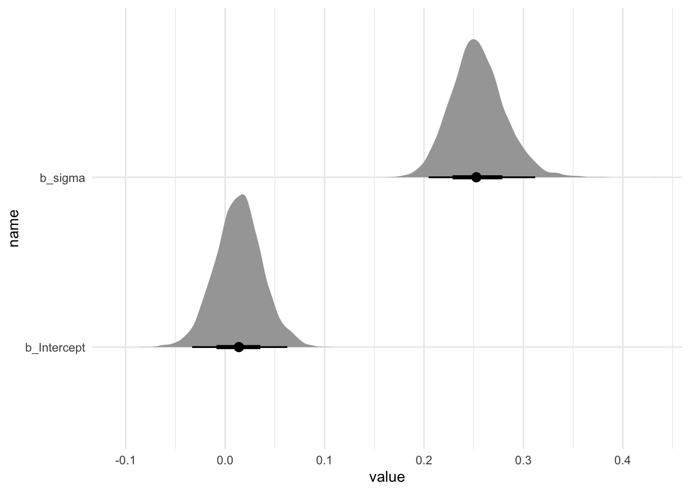
Math model:
\[\begin{align} \text{error_va}_{i} &\sim \text{Laplace}(\mu, b) \\ \mu &\sim \mathcal{N}(0, 1) \\ b &\sim \text{Half-Cauchy}(0, 1) \end{align}\]
To fit a laplace distribution, we need to define our own custom distribution, since brms does not provide a default defined Laplace distribution.
There is a wiki about Laplace distribution, which defines the pdf of a Laplace distribution to be \(f(x | \mu, b) = \frac{1}{2b} \exp(-\frac{|x - \mu|}{b})\), where \(\mu\) is a location parameter, and \(b > 0\) is a scale parameter. And this is what the stan manual defines the pdf of the double exponential distribution — \(f(y|\mu, \sigma) = \frac{1}{2\sigma} \exp(- \frac{|y - \mu|}{\sigma})\), basically everything is the same except they’re using different notations for the scale parameter …
# log of the laplace pdf
laplace_lpdf <- "
real laplace_lpdf(real y, real mu, real sigma) {
return double_exponential_lpdf(y | mu, sigma);
}
"
# define custom family
laplace_family = custom_family(
"laplace",
dpars = c("mu", "sigma"),
links = c("identity", "log"),
lb = c(NA, 0),
type = "real"
)Formula and prior:
f <- bf(error.x ~ 0,
mu ~ (1 | participantId),
sigma ~ (1 | participantId),
family = laplace_family)
# define prior
p <- c(
prior(normal(0, 1), class = "Intercept"),
prior(normal(0, 1), class = "sd", group = participantId, lb = 0),
prior(normal(0, 1), class = "Intercept", dpar ="sigma"),
prior(normal(0, 1), class = "sd", group = participantId, dpar ="sigma", lb = 0)
)Fit the model:
model.x.laplace <- task2_df %>% mutate(error.x = va.select.x - va.ans.x) %>%
brm(
formula = f,
family = laplace_family,
stanvars = stanvar(scode = laplace_lpdf, block = "functions"),
prior = p,
data = .,
chains = 4,
cores = 4,
file = here("fitted_models", "task2.x.laplace"),
file_refit = "on_change",
iter = 6000,
control = list(adapt_delta = 0.99),
save_pars = save_pars(all = TRUE),
)Check the fitted model:
summary(model.x.laplace) Family: laplace
Links: mu = identity; sigma = log
Formula: error.x ~ 0
mu ~ (1 | participantId)
sigma ~ (1 | participantId)
Data: . (Number of observations: 160)
Draws: 4 chains, each with iter = 6000; warmup = 3000; thin = 1;
total post-warmup draws = 12000
Multilevel Hyperparameters:
~participantId (Number of levels: 16)
Estimate Est.Error l-95% CI u-95% CI Rhat Bulk_ESS Tail_ESS
sd(Intercept) 0.01 0.01 0.00 0.04 1.00 6969 5256
sd(sigma_Intercept) 0.22 0.13 0.01 0.49 1.00 2719 3586
Regression Coefficients:
Estimate Est.Error l-95% CI u-95% CI Rhat Bulk_ESS Tail_ESS
Intercept 0.00 0.01 -0.03 0.03 1.00 12805 7906
sigma_Intercept -1.68 0.10 -1.88 -1.48 1.00 8911 8191
Draws were sampled using sample(hmc). For each parameter, Bulk_ESS
and Tail_ESS are effective sample size measures, and Rhat is the potential
scale reduction factor on split chains (at convergence, Rhat = 1).plot(model.x.laplace)
Given that we are using custom families, we also need to define our custom function to perform posterior predictive checks. Let’s define custom functions for posterior predictive check:
expose_functions(model.x.laplace, vectorize = TRUE)
# # Define a random number generator for Laplace distribution
laplace_rng <- function(mu, sigma) {
# Generate from Laplace distribution using uniform transformation
u <- runif(length(mu)) - 0.5
mu + sigma * sign(u) * (-log(1 - 2 * abs(u)))
}
# Define the posterior predict function for our custom family
posterior_predict_laplace <- function(i, prep, ...) {
mu <- brms::get_dpar(prep, "mu", i = i)
sigma <- brms::get_dpar(prep, "sigma", i = i)
laplace_rng(mu, sigma)
}Posterior predictive check:
pp_check(model.x.laplace, ndraws = 100) -> task2.laplace
pp_check(model.x.laplace, ndraws = 100, type = "pit_ecdf") -> task2.laplace.pit
task2.laplace
task2.laplace.pit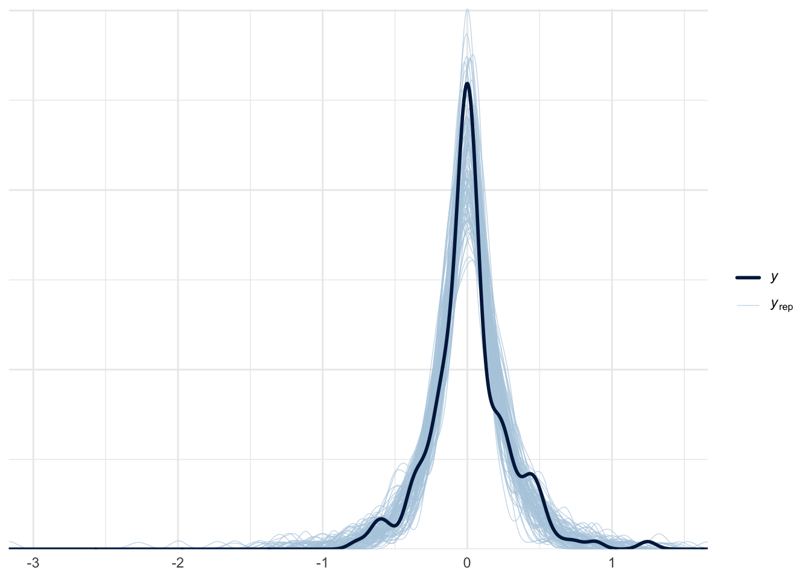

Plot posterior distribution of model parameter:
# model.x.laplace %>% get_variables(.)
model.x.laplace %>% spread_draws(b_Intercept, b_sigma_Intercept) %>%
pivot_longer(4:5) %>%
ggplot(aes(x = value, y = name)) + stat_halfeye()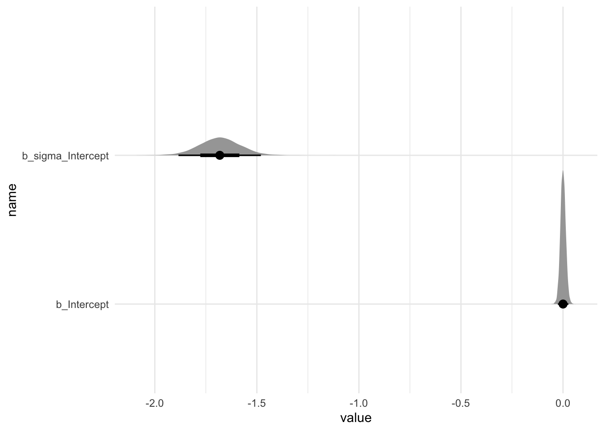
Plot posterior predictive distribution on top:
prediction <- task2_df %>% mutate(error.x = va.select.x - va.ans.x, ) %>%
add_predicted_draws(model.x.laplace, ndraws = 100)
task2_df %>% mutate(error.x = va.select.x - va.ans.x,
# error.x = ifelse(abs(error.x) < 1e-10, 0, error.x)
) %>%
ggplot() +
stat_slab(data = prediction, aes(x = .prediction),
fill = "skyblue", alpha = 0.6) +
geom_dots(aes(x = error.x)) +
labs(
title = "Posterior Predictive Distribution vs. Observed Data",
x = "error.x",
y = NULL
)
Plot strip plot:
task2_df %>% modelr::data_grid(error.x = 0,
participantId = unique(participantId)) %>%
add_predicted_draws(model.x.laplace, ndraws = 100) %>%
ggplot() +
stat_slab(aes(x = .prediction, group = .draw),
color = "skyblue", alpha = 0.2, size = 0.5, fill = NA, n = 3000) +
scale_thickness_shared() +
stat_slab(data = task2_df, aes(x = va.select.x - va.ans.x),
color = "darkblue", fill = NA, n = 3000, size = 0.5) +
geom_rug(data = task2_df, aes(x = va.select.x - va.ans.x), size = 0.5) +
labs(y = "density", x = "signed error (on x)") +
theme_minimal(base_size = 8) +
coord_cartesian(xlim = c(-1, 1.5)) +
scale_y_continuous(breaks = 0) -> p
p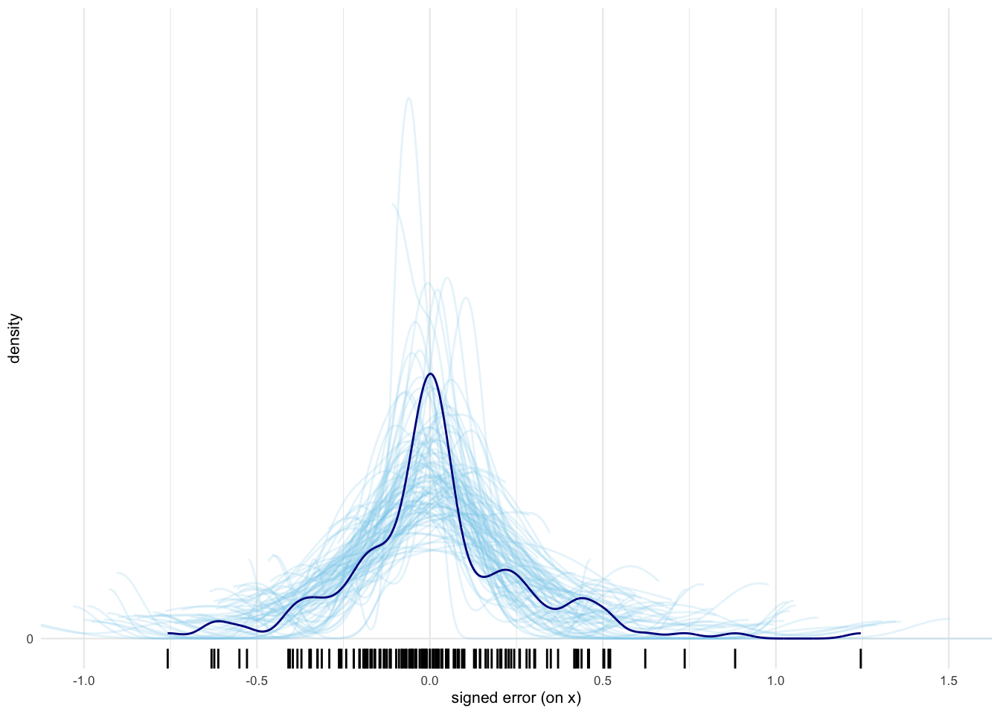
task2_df %>% modelr::data_grid(error.y = 0,
participantId = unique(participantId)) %>%
add_predicted_draws(model.y.weibull, ndraws = 100) %>%
# group_by(.draw) %>%
ggplot() +
stat_slab(aes(x = .prediction, group = .draw),
color = "lightblue", alpha = 0.5, fill = NA, n = 3000, size = 0.5) +
scale_thickness_shared() +
coord_cartesian(xlim = c(0, 0.1)) +
geom_rug(data = task2_df, aes(x = va.ans.y - va.select.y), size = 0.5) +
stat_slab(data = task2_df, aes(x = va.ans.y - va.select.y),
color = "darkblue", fill = NA, n = 3000, size = 0.5) +
labs(y = "density", x = "signed error" ) +
scale_y_continuous(breaks = 0) -> p
p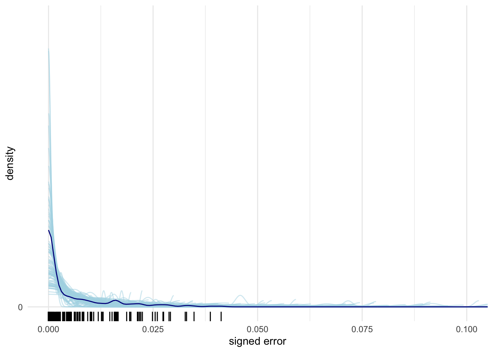
The Cauchy distribution puts too much weight on its tails; we’ll go for studente-t, which is more robust.
Math model:
\[\begin{align} \text{error_va}_{i} &\sim \text{student-t}(\mu, \sigma, \nu) \\ \mu ... \\ \sigma .... \\ \nu ... \end{align}\]
Formula and prior:
f <- bf(
error.x ~ 0, # No intercept in main formula
mu ~ (1 | participantId), # Location parameter with intercept
sigma ~ (1 | participantId), # Scale parameter with intercept, positive
nu ~ (1 | participantId), # Degrees of freedom with intercept, positive
family = student()
)
p <- c(
prior(normal(0, 1), class = "Intercept"),
prior(cauchy(0, 1), class = "sd", group = "participantId", lb = 0),
prior(normal(0, 1), class = "Intercept", dpar = "sigma"),
prior(cauchy(0, 1), class = "sd", group = "participantId", dpar = "sigma", lb = 0),
prior(normal(0, 1), class = "Intercept", dpar = "nu"),
prior(cauchy(0, 1), class = "sd", group = "participantId", dpar = "nu", lb = 0)
)Note that student has a log link for sigma and a logm1 link for nu.
Fit the model:
model.x.student <- task2_df %>% mutate(error.x = va.select.x - va.ans.x) %>%
brm(
formula = f,
prior = p,
data = .,
chains = 4,
cores = 4,
file = here("fitted_models", "task2.x.student"),
file_refit = "on_change",
iter = 6000,
control = list(adapt_delta = 0.99)
)The model does not converge, and has exceeded the maximum treedepth, suggesting that this is likely not the best model.
Check the fitted results:
summary(model.x.student) Family: student
Links: mu = identity; sigma = log; nu = logm1
Formula: error.x ~ 0
mu ~ (1 | participantId)
sigma ~ (1 | participantId)
nu ~ (1 | participantId)
Data: . (Number of observations: 160)
Draws: 4 chains, each with iter = 6000; warmup = 3000; thin = 1;
total post-warmup draws = 12000
Multilevel Hyperparameters:
~participantId (Number of levels: 16)
Estimate Est.Error l-95% CI u-95% CI Rhat Bulk_ESS Tail_ESS
sd(Intercept) 0.03 0.02 0.00 0.05 1.46 8 61
sd(sigma_Intercept) 0.18 0.10 0.03 0.42 1.76 12 54
sd(nu_Intercept) 10.51 7.86 0.06 19.44 2.69 5 NA
Regression Coefficients:
Estimate Est.Error l-95% CI u-95% CI Rhat Bulk_ESS Tail_ESS
Intercept -0.00 0.01 -0.02 0.03 2.02 13 54
sigma_Intercept -1.81 0.10 -2.02 -1.57 1.52 16 53
nu_Intercept 0.05 0.66 -0.58 1.34 2.09 6 4
Draws were sampled using sample(hmc). For each parameter, Bulk_ESS
and Tail_ESS are effective sample size measures, and Rhat is the potential
scale reduction factor on split chains (at convergence, Rhat = 1).plot(model.x.student)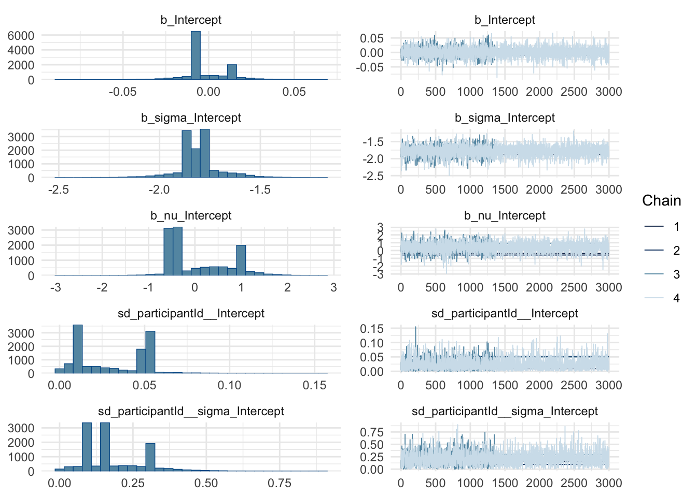

pp_check(model.x.student, ndraws = 100)
pp_check(model.x.student, ndraws = 100, type = "pit_ecdf")
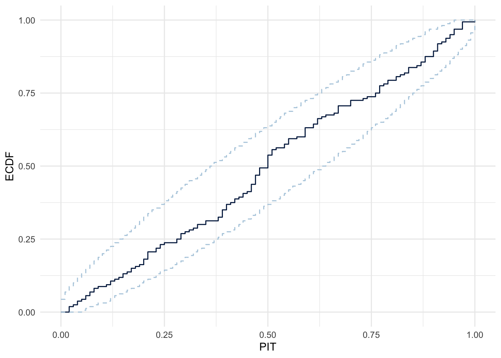
The model does appear to be well-calibrated, however.
Recall that the when using a custom brms family, we need to define our own funtions. First define the log_lik (log likelihood) related functions:
expose_functions(model.x.laplace, vectorize = TRUE)
# # Define log-likelihood function for Laplace distribution
# laplace_lpdf <- function(y, mu, sigma) {
# -log(2 * sigma) - abs(y - mu) / sigma
# }
# Define log-likelihood function for brms
log_lik_laplace <- function(i, prep) {
mu <- brms::get_dpar(prep, "mu", i = i)
sigma <- brms::get_dpar(prep, "sigma", i = i)
y <- prep$data$Y[i]
laplace_lpdf(y, mu, sigma)
}Loo comparison between all models for error on the X-axis in visual angle2:
2 Note that we do not use student t because it did not converge.
loo(model.x.normal, model.x.laplace, moment_match = TRUE)Running /Library/Frameworks/R.framework/Resources/bin/R CMD SHLIB foo.c
using C compiler: ‘Apple clang version 17.0.0 (clang-1700.3.19.1)’
using SDK: ‘’
clang -arch arm64 -I"/Library/Frameworks/R.framework/Resources/include" -DNDEBUG -I"/Users/shenglong/Library/Caches/org.R-project.R/R/renv/cache/v5/macos/R-4.4/aarch64-apple-darwin20/Rcpp/1.1.0/0d3d8867aa41b0d9ad113b50c169ecb2/Rcpp/include/" -I"/Users/shenglong/Downloads/vis-decode-analysis/renv/library/macos/R-4.4/aarch64-apple-darwin20/RcppEigen/include/" -I"/Users/shenglong/Downloads/vis-decode-analysis/renv/library/macos/R-4.4/aarch64-apple-darwin20/RcppEigen/include/unsupported" -I"/Users/shenglong/Downloads/vis-decode-analysis/renv/library/macos/R-4.4/aarch64-apple-darwin20/BH/include" -I"/Users/shenglong/Library/Caches/org.R-project.R/R/renv/cache/v5/macos/R-4.4/aarch64-apple-darwin20/StanHeaders/2.32.10/c35dc5b81d7ffb1018aa090dff364ecb/StanHeaders/include/src/" -I"/Users/shenglong/Library/Caches/org.R-project.R/R/renv/cache/v5/macos/R-4.4/aarch64-apple-darwin20/StanHeaders/2.32.10/c35dc5b81d7ffb1018aa090dff364ecb/StanHeaders/include/" -I"/Users/shenglong/Library/Caches/org.R-project.R/R/renv/cache/v5/macos/R-4.4/aarch64-apple-darwin20/RcppParallel/5.1.11-1/07d228a359f31d8aebe6d2f643c1f012/RcppParallel/include/" -I"/Users/shenglong/Library/Caches/org.R-project.R/R/renv/cache/v5/macos/R-4.4/aarch64-apple-darwin20/rstan/2.32.7/5f47b80f0db40503697eef138a31a6ef/rstan/include" -DEIGEN_NO_DEBUG -DBOOST_DISABLE_ASSERTS -DBOOST_PENDING_INTEGER_LOG2_HPP -DSTAN_THREADS -DUSE_STANC3 -DSTRICT_R_HEADERS -DBOOST_PHOENIX_NO_VARIADIC_EXPRESSION -D_HAS_AUTO_PTR_ETC=0 -include '/Users/shenglong/Library/Caches/org.R-project.R/R/renv/cache/v5/macos/R-4.4/aarch64-apple-darwin20/StanHeaders/2.32.10/c35dc5b81d7ffb1018aa090dff364ecb/StanHeaders/include/stan/math/prim/fun/Eigen.hpp' -D_REENTRANT -DRCPP_PARALLEL_USE_TBB=1 -I/opt/R/arm64/include -fPIC -falign-functions=64 -Wall -g -O2 -c foo.c -o foo.o
In file included from <built-in>:1:
In file included from /Users/shenglong/Library/Caches/org.R-project.R/R/renv/cache/v5/macos/R-4.4/aarch64-apple-darwin20/StanHeaders/2.32.10/c35dc5b81d7ffb1018aa090dff364ecb/StanHeaders/include/stan/math/prim/fun/Eigen.hpp:22:
In file included from /Users/shenglong/Downloads/vis-decode-analysis/renv/library/macos/R-4.4/aarch64-apple-darwin20/RcppEigen/include/Eigen/Dense:1:
In file included from /Users/shenglong/Downloads/vis-decode-analysis/renv/library/macos/R-4.4/aarch64-apple-darwin20/RcppEigen/include/Eigen/Core:19:
/Users/shenglong/Downloads/vis-decode-analysis/renv/library/macos/R-4.4/aarch64-apple-darwin20/RcppEigen/include/Eigen/src/Core/util/Macros.h:679:10: fatal error: 'cmath' file not found
679 | #include <cmath>
| ^~~~~~~
1 error generated.
make: *** [foo.o] Error 1Running /Library/Frameworks/R.framework/Resources/bin/R CMD SHLIB foo.c
using C compiler: ‘Apple clang version 17.0.0 (clang-1700.3.19.1)’
using SDK: ‘’
clang -arch arm64 -I"/Library/Frameworks/R.framework/Resources/include" -DNDEBUG -I"/Users/shenglong/Library/Caches/org.R-project.R/R/renv/cache/v5/macos/R-4.4/aarch64-apple-darwin20/Rcpp/1.1.0/0d3d8867aa41b0d9ad113b50c169ecb2/Rcpp/include/" -I"/Users/shenglong/Downloads/vis-decode-analysis/renv/library/macos/R-4.4/aarch64-apple-darwin20/RcppEigen/include/" -I"/Users/shenglong/Downloads/vis-decode-analysis/renv/library/macos/R-4.4/aarch64-apple-darwin20/RcppEigen/include/unsupported" -I"/Users/shenglong/Downloads/vis-decode-analysis/renv/library/macos/R-4.4/aarch64-apple-darwin20/BH/include" -I"/Users/shenglong/Library/Caches/org.R-project.R/R/renv/cache/v5/macos/R-4.4/aarch64-apple-darwin20/StanHeaders/2.32.10/c35dc5b81d7ffb1018aa090dff364ecb/StanHeaders/include/src/" -I"/Users/shenglong/Library/Caches/org.R-project.R/R/renv/cache/v5/macos/R-4.4/aarch64-apple-darwin20/StanHeaders/2.32.10/c35dc5b81d7ffb1018aa090dff364ecb/StanHeaders/include/" -I"/Users/shenglong/Library/Caches/org.R-project.R/R/renv/cache/v5/macos/R-4.4/aarch64-apple-darwin20/RcppParallel/5.1.11-1/07d228a359f31d8aebe6d2f643c1f012/RcppParallel/include/" -I"/Users/shenglong/Library/Caches/org.R-project.R/R/renv/cache/v5/macos/R-4.4/aarch64-apple-darwin20/rstan/2.32.7/5f47b80f0db40503697eef138a31a6ef/rstan/include" -DEIGEN_NO_DEBUG -DBOOST_DISABLE_ASSERTS -DBOOST_PENDING_INTEGER_LOG2_HPP -DSTAN_THREADS -DUSE_STANC3 -DSTRICT_R_HEADERS -DBOOST_PHOENIX_NO_VARIADIC_EXPRESSION -D_HAS_AUTO_PTR_ETC=0 -include '/Users/shenglong/Library/Caches/org.R-project.R/R/renv/cache/v5/macos/R-4.4/aarch64-apple-darwin20/StanHeaders/2.32.10/c35dc5b81d7ffb1018aa090dff364ecb/StanHeaders/include/stan/math/prim/fun/Eigen.hpp' -D_REENTRANT -DRCPP_PARALLEL_USE_TBB=1 -I/opt/R/arm64/include -fPIC -falign-functions=64 -Wall -g -O2 -c foo.c -o foo.o
In file included from <built-in>:1:
In file included from /Users/shenglong/Library/Caches/org.R-project.R/R/renv/cache/v5/macos/R-4.4/aarch64-apple-darwin20/StanHeaders/2.32.10/c35dc5b81d7ffb1018aa090dff364ecb/StanHeaders/include/stan/math/prim/fun/Eigen.hpp:22:
In file included from /Users/shenglong/Downloads/vis-decode-analysis/renv/library/macos/R-4.4/aarch64-apple-darwin20/RcppEigen/include/Eigen/Dense:1:
In file included from /Users/shenglong/Downloads/vis-decode-analysis/renv/library/macos/R-4.4/aarch64-apple-darwin20/RcppEigen/include/Eigen/Core:19:
/Users/shenglong/Downloads/vis-decode-analysis/renv/library/macos/R-4.4/aarch64-apple-darwin20/RcppEigen/include/Eigen/src/Core/util/Macros.h:679:10: fatal error: 'cmath' file not found
679 | #include <cmath>
| ^~~~~~~
1 error generated.
make: *** [foo.o] Error 1Output of model 'model.x.normal':
Computed from 12000 by 160 log-likelihood matrix.
Estimate SE
elpd_loo -16.4 12.8
p_loo 19.0 3.9
looic 32.9 25.7
------
MCSE of elpd_loo is 0.1.
MCSE and ESS estimates assume MCMC draws (r_eff in [0.6, 1.5]).
All Pareto k estimates are good (k < 0.7).
See help('pareto-k-diagnostic') for details.
Output of model 'model.x.laplace':
Computed from 12000 by 160 log-likelihood matrix.
Estimate SE
elpd_loo -3.4 13.5
p_loo 8.3 1.0
looic 6.9 26.9
------
MCSE of elpd_loo is 0.0.
MCSE and ESS estimates assume MCMC draws (r_eff in [0.6, 1.5]).
All Pareto k estimates are good (k < 0.7).
See help('pareto-k-diagnostic') for details.
Model comparisons:
elpd_diff se_diff
model.x.laplace 0.0 0.0
model.x.normal -13.0 4.6 So we see that the laplace model is the best one for X.